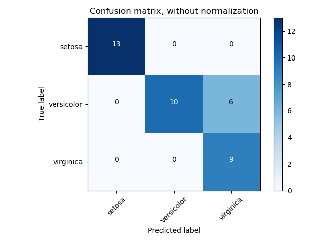
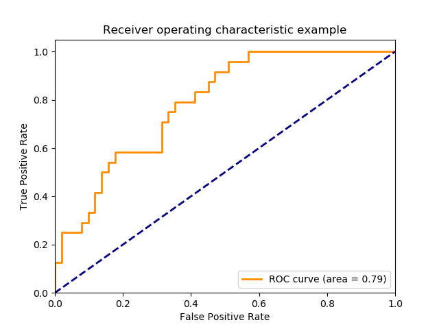

3.3. 模型评估:对模型的预测进行量化考核¶
译者注
在此献上我做的视频，希望对大家有所帮助。视频地址： (Sklearn模型评估方法); (Sklearn分类模型评估方法)； (准确率和混淆矩阵)； (precision-recall-F_measures)； (ROC曲线)； (各种分类损失函数)； (Sklearn 回归器评估方法)。
有 3 种不同的 API 用于评估模型预测的质量:
- Estimator score method: Estimators（估计器）有一个
score方法，为其解决的问题提供了默认的评估准则(evaluation criterion) 。 在本页面上没有相关讨论，但是在每个 estimator 的文档中会有相关的讨论。 - Scoring parameter: 使用了 cross-validation (比如
model_selection.cross_val_score和model_selection.GridSearchCV) 的模型评估工具依赖于一个内部评分策略。此参数的用法参考 scoring 参数: 定义模型评估准则 。 - Metric functions: 模块
metrics实现了一些函数用于以某种特殊目的评估模型预测误差。这些测度指标(metrics)的详细介绍在 分类问题的指标 ， 多标签排序指标 , 回归问题的指标 以及 聚类问题的测度 中。
最后, 无实际意义的估计器(Dummy estimators) 可以针对随机预测结果计算那些测度指标的一个基准值。
See also
For “pairwise” metrics, between samples and not estimators or predictions, see the 成对测度, 相似性 和 核 section.
3.3.1. scoring 参数: 定义模型评估准则¶
模型选择与评估使用的工具，例如 model_selection.GridSearchCV 和 model_selection.cross_val_score,
接受一个 scoring 参数，该参数控制着估计器的评估过程中使用什么样的测度指标(metric)。
3.3.1.1. 一般情况: 使用预定义的值¶
对于最常见的用例, 可以使用 scoring 参数指定一个评分器对象(scorer object); 下表显示了所有可能的值。
所有 scorer objects 遵循惯例:较高的返回值优于较低的返回值(higher return values are better than lower return values) 。
因此，度量模型和数据之间距离的测度指标(metrics), 如 metrics.mean_squared_error 可作为 neg_mean_squared_error, 返回变负的指标值。
(译者注：也就是说 有些 测度指标比如均方误差本来是越小越好，但是为了遵循越大越好的惯例，我们要把这种原来越小越好的指标取个负号，这样就符合惯例啦 )
| Scoring | Function | Comment |
|---|---|---|
| Classification | ||
| ‘accuracy’ | metrics.accuracy_score |
|
| ‘balanced_accuracy’ | metrics.balanced_accuracy_score |
for binary targets |
| ‘average_precision’ | metrics.average_precision_score |
|
| ‘brier_score_loss’ | metrics.brier_score_loss |
|
| ‘f1’ | metrics.f1_score |
for binary targets |
| ‘f1_micro’ | metrics.f1_score |
micro-averaged |
| ‘f1_macro’ | metrics.f1_score |
macro-averaged |
| ‘f1_weighted’ | metrics.f1_score |
weighted average |
| ‘f1_samples’ | metrics.f1_score |
by multilabel sample |
| ‘neg_log_loss’ | metrics.log_loss |
requires predict_proba support |
| ‘precision’ etc. | metrics.precision_score |
suffixes apply as with ‘f1’ |
| ‘recall’ etc. | metrics.recall_score |
suffixes apply as with ‘f1’ |
| ‘roc_auc’ | metrics.roc_auc_score |
|
| Clustering | ||
| ‘adjusted_mutual_info_score’ | metrics.adjusted_mutual_info_score |
|
| ‘adjusted_rand_score’ | metrics.adjusted_rand_score |
|
| ‘completeness_score’ | metrics.completeness_score |
|
| ‘fowlkes_mallows_score’ | metrics.fowlkes_mallows_score |
|
| ‘homogeneity_score’ | metrics.homogeneity_score |
|
| ‘mutual_info_score’ | metrics.mutual_info_score |
|
| ‘normalized_mutual_info_score’ | metrics.normalized_mutual_info_score |
|
| ‘v_measure_score’ | metrics.v_measure_score |
|
| Regression | ||
| ‘explained_variance’ | metrics.explained_variance_score |
|
| ‘neg_mean_absolute_error’ | metrics.mean_absolute_error |
|
| ‘neg_mean_squared_error’ | metrics.mean_squared_error |
|
| ‘neg_mean_squared_log_error’ | metrics.mean_squared_log_error |
|
| ‘neg_median_absolute_error’ | metrics.median_absolute_error |
|
| ‘r2’ | metrics.r2_score |
用法案例:
>>> from sklearn import svm, datasets
>>> from sklearn.model_selection import cross_val_score
>>> iris = datasets.load_iris()
>>> X, y = iris.data, iris.target
>>> clf = svm.SVC(gamma='scale', random_state=0)
>>> cross_val_score(clf, X, y, scoring='recall_macro',
... cv=5) # doctest: +ELLIPSIS, +NORMALIZE_WHITESPACE
array([0.96..., 1. ..., 0.96..., 0.96..., 1. ])
>>> model = svm.SVC()
>>> cross_val_score(model, X, y, cv=5, scoring='wrong_choice')
Traceback (most recent call last):
ValueError: 'wrong_choice' is not a valid scoring value. Use sorted(sklearn.metrics.SCORERS.keys()) to get valid options.
Note
通过 ValueError 异常列举出来的那些值对应于度量预测精度的函数，它们会在下面的小节中介绍。
用于这些函数的评分器对象(scorer objects) 被存放在 sklearn.metrics.SCORERS 字典中。
3.3.1.2. 利用指标函数 metric 自定义评分策略¶
模块 sklearn.metrics 也暴露了一组简单的函数：当给定真值和预测值的时候用来度量一个预测错误。
- 以
_score结尾的函数返回一个值进行最大化，值越高代表预测越好 - 以
_error或_loss结尾的函数 返回一个值进行最小化，值越小代表预测越好。当我们使用函数make_scorer把这种越小越好的metric转换成评分对象(scorer object)的时候,就需要设置参数greater_is_better为 False。 (这个参数默认是True,对这个参数下面还会解释)
可用于各种机器学习任务的 Metrics （指标）在下面详细介绍。
许多 metrics 没有被命名以使得它们被用作 scoring 值，有时是因为它们需要额外的参数，例如 fbeta_score 。
在这种情况下，您需要生成一个适当的评分对象(scoring object)。最简单的办法就是利用函数 make_scorer 生成一个用于评分的可调用对象
(callable object)。 函数 make_scorer 将 metrics 转换为可用于模型评估的可调用对象。
(译者注：可调用对象即callable object是Python的一个知识点，如果你知道这个知识点那么这段话不难理解，如果不知道的话，请自行查一下就会明白啦！)
一个典型的用法是从库中封装一个已经存在的具有非默认值参数的 metric 函数，例如 fbeta_score 函数的 beta 参数
>>> from sklearn.metrics import fbeta_score, make_scorer
>>> ftwo_scorer = make_scorer(fbeta_score, beta=2)
>>> from sklearn.model_selection import GridSearchCV
>>> from sklearn.svm import LinearSVC
>>> grid = GridSearchCV(LinearSVC(), param_grid={'C': [1, 10]},
... scoring=ftwo_scorer, cv=5)
第二个用法是使用 make_scorer 从简单的 python 函数构建一个完全自定义的评分对象(scorer object) ，可以接受几个参数 :
- 你想使用的Python函数 (以
my_custom_loss_func为例) - 你的python函数返回值是 score (
greater_is_better=True, the default) 还是 loss (greater_is_better=False)。 如果是 loss 的话, python函数的输出就会被 scorer object 取负号，以满足 交叉验证 中关于 评分准则越大越好 的约定惯例。 - 如果你要定义的是一个分类评分指标(classification metrics)，还要确认你的python函数需要连续的 decision certainties (
needs_threshold=True)， 默认值是 False。 - 任意的附加参数, 比如
f1_score函数中的beta或labels.
下面是一个构建自定义评分器(custom scorers)的例子,并且使用了参数 greater_is_better
>>> import numpy as np
>>> def my_custom_loss_func(y_true, y_pred):
... diff = np.abs(y_true - y_pred).max()
... return np.log1p(diff)
...
>>> # score will negate the return value of my_custom_loss_func,
>>> # which will be np.log(2), 0.693, given the values for X
>>> # and y defined below.
>>> score = make_scorer(my_custom_loss_func, greater_is_better=False)
>>> X = [[1], [1]]
>>> y = [0, 1]
>>> from sklearn.dummy import DummyClassifier
>>> clf = DummyClassifier(strategy='most_frequent', random_state=0)
>>> clf = clf.fit(X, y)
>>> my_custom_loss_func(clf.predict(X), y)
0.69...
>>> score(clf, X, y)
-0.69...
3.3.1.3. 实现你自己的 scoring object¶
您可以通过从头开始构建自己的 scoring object，而不使用 make_scorer 来生成更加灵活的模型评分对象(model scorers)。
如果一个python 可调用对象 被叫做 scorer ，那么它需要符合以下两个规则所指定的协议:
- 可以使用参数
(estimator, X, y)来调用它，其中estimator是要被评估的模型，X是验证数据，y是 真实目标变量 (在有监督情况下) 或 None (在无监督情况下)。 - 它返回一个浮点数，用于对
estimator在X上的预测质量以y为真值参考进行量化。 再就是，按照惯例，越高的数字越好， 所以如果你的 scorer 返回 loss ，那么这个值应该被取负号 。
3.3.1.4. 使用多指标评估¶
Scikit-learn 还允许在 GridSearchCV, RandomizedSearchCV 和 cross_validate 中进行多指标的评估(evaluation of multiple metrics)。
有两种方法可以为 scoring 参数指定 多个评分指标:
- 把多个metrics的名字以字符串列表的方式传给
scoring参数 :: >>> scoring = ['accuracy', 'precision']
- 把多个metrics的名字以字符串列表的方式传给
- 以字典的形式把评分器的名称映射到评分函数上，然后把这字典作为参数传给
scoring参数 :: >>> from sklearn.metrics import accuracy_score >>> from sklearn.metrics import make_scorer >>> scoring = {'accuracy': make_scorer(accuracy_score), ... 'prec': 'precision'}
- 以字典的形式把评分器的名称映射到评分函数上，然后把这字典作为参数传给
要注意的是 字典的值 既可以是 scorer functions 也可以是 sklearn预定义的metric的名字字符串。
目前，只有那些返回单个得分值的 scorer functions 可以被传到 字典中。 那些有多个返回值的 scorer functions 不被允许传入。 如果非要这么干的话，必须对其进行封装使其只有单个返回值
>>> from sklearn.model_selection import cross_validate
>>> from sklearn.metrics import confusion_matrix
>>> # A sample toy binary classification dataset
>>> X, y = datasets.make_classification(n_classes=2, random_state=0)
>>> svm = LinearSVC(random_state=0)
>>> def tn(y_true, y_pred): return confusion_matrix(y_true, y_pred)[0, 0]
>>> def fp(y_true, y_pred): return confusion_matrix(y_true, y_pred)[0, 1]
>>> def fn(y_true, y_pred): return confusion_matrix(y_true, y_pred)[1, 0]
>>> def tp(y_true, y_pred): return confusion_matrix(y_true, y_pred)[1, 1]
>>> scoring = {'tp': make_scorer(tp), 'tn': make_scorer(tn),
... 'fp': make_scorer(fp), 'fn': make_scorer(fn)}
>>> cv_results = cross_validate(svm.fit(X, y), X, y,
... scoring=scoring, cv=5)
>>> # Getting the test set true positive scores
>>> print(cv_results['test_tp'])
[10 9 8 7 8]
>>> # Getting the test set false negative scores
>>> print(cv_results['test_fn'])
[0 1 2 3 2]
3.3.2. 分类问题的指标¶
译者注
在此献上我做的视频，希望对大家有所帮助。视频地址： (Sklearn分类模型评估方法)； (准确率和混淆矩阵)； (precision-recall-F_measures)； (ROC曲线)； (各种分类损失函数)；
sklearn.metrics 模块实现了几个 loss, score, 和 utility 函数来度量分类器性能。
某些测度指标(metrics)可能需要 positive class，confidence values 或 binary decisions values 的概率估计。
大多数的实现允许每个样本通过 sample_weight 参数为 整体得分(overall score) 提供 加权贡献(weighted contribution)。
这里面的一部分指标仅仅限于在二分类的情况下使用(binary classification case):
precision_recall_curve(y_true, probas_pred) |
Compute precision-recall pairs for different probability thresholds |
roc_curve(y_true, y_score[, pos_label, …]) |
Compute Receiver operating characteristic (ROC) |
balanced_accuracy_score(y_true, y_pred[, …]) |
Compute the balanced accuracy |
下面这些既能在二分类中用也能够用于多分类的情况(multiclass case):
cohen_kappa_score(y1, y2[, labels, weights, …]) |
Cohen’s kappa: a statistic that measures inter-annotator agreement. |
confusion_matrix(y_true, y_pred[, labels, …]) |
Compute confusion matrix to evaluate the accuracy of a classification |
hinge_loss(y_true, pred_decision[, labels, …]) |
Average hinge loss (non-regularized) |
matthews_corrcoef(y_true, y_pred[, …]) |
Compute the Matthews correlation coefficient (MCC) |
下面的这些还可以用在多标签分类中(multilabel case):
accuracy_score(y_true, y_pred[, normalize, …]) |
Accuracy classification score. |
classification_report(y_true, y_pred[, …]) |
Build a text report showing the main classification metrics |
f1_score(y_true, y_pred[, labels, …]) |
Compute the F1 score, also known as balanced F-score or F-measure |
fbeta_score(y_true, y_pred, beta[, labels, …]) |
Compute the F-beta score |
hamming_loss(y_true, y_pred[, labels, …]) |
Compute the average Hamming loss. |
jaccard_similarity_score(y_true, y_pred[, …]) |
Jaccard similarity coefficient score |
log_loss(y_true, y_pred[, eps, normalize, …]) |
Log loss, aka logistic loss or cross-entropy loss. |
precision_recall_fscore_support(y_true, y_pred) |
Compute precision, recall, F-measure and support for each class |
precision_score(y_true, y_pred[, labels, …]) |
Compute the precision |
recall_score(y_true, y_pred[, labels, …]) |
Compute the recall |
zero_one_loss(y_true, y_pred[, normalize, …]) |
Zero-one classification loss. |
下面的这些指标可以用在两类多标签问题(不是multiclass而是binary classes喔):
average_precision_score(y_true, y_score[, …]) |
Compute average precision (AP) from prediction scores |
roc_auc_score(y_true, y_score[, average, …]) |
Compute Area Under the Receiver Operating Characteristic Curve (ROC AUC) from prediction scores. |
在下面的小节中，我们会逐个讲解这些函数, 包括一些常用API的注解和metric的数学定义。
3.3.2.1. 从二分类问题到多类或多标签问题¶
有些 metrics 基本上是为 binary classification tasks 定义的 (例如 f1_score, roc_auc_score) 。
在这些情况下，默认情况下仅评估 positive label （正标签），默认情况下我们假定 positive label （正类） 标记为 1
(尽管可以通过 pos_label 参数进行配置)。
将 binary metric （二分指标）扩展为 multiclass （多类）或 multilabel （多标签）问题时，数据将被视为二分问题的集合，每个类都有一个binary metric。
然后可以使用多种策略在整个类中计算所有二分指标的平均值(average binary metric calculations across the set of classes)，
这些不同的计算平均值的策略在某些特定场景中可能会用到。 如果可用，您应该使用 average 参数来选择某个平均策略。
"macro"简单地计算 binary metrics （二分指标）的平均值，赋予每个类别相同的权重。在不常见的类别重要的问题上， macro-averaging （宏观平均）可能是突出表现的一种手段。另一方面，所有类别同样重要的假设通常是不真实的， 因此 macro-averaging （宏观平均）将过度强调不频繁类的典型的低性能。"weighted"通过计算其在真实数据样本中的存在来对每个类的 score 进行加权的 binary metrics （二分指标）的平均值来计算类不平衡。"micro"给每个 sample-class pair （样本类对）对 overall metric （总体指数）（sample-class 权重的结果除外） 等同的贡献。 除了对每个类别的 metric 进行求和之外，这个总和构成每个类别度量的 dividends （除数）和 divisors （除数）计算一个整体商。 在 multilabel settings （多标签设置）中， Micro-averaging 可能是优先选择的，包括要忽略 majority class （多数类）的 multiclass classification （多类分类）。"samples"仅适用于 multilabel problems （多标签问题）。它 does not calculate a per-class measure （不计算每个类别的 measure），而是计算 evaluation data （评估数据）中的每个样本的 true and predicted classes （真实和预测类别）的 metric （指标），并返回 (sample_weight-weighted) 加权平均。- 选择
average=None将返回一个 array 与每个类的 score 。
虽然将 multiclass data 作为 array of class labels 提供给 metric ，就像 binary targets （二分类目标）一样，
multilabel data 被指定为 indicator matrix（标识矩阵），其中如果样本 i 具有标号 j ， [i, j] 具有值 1， 否则为值 0 。
3.3.2.2. Accuracy score¶
函数 accuracy_score 计算 accuracy,
也就是计算正确预测的比例(默认)或数量(normalize=False)。
在多标签分类中，该函数返回子集的准确率(subset accuracy)。对某个样本的预测标签的整个集合与该样本真正的标签集合严格匹配， 那么子集准确率就是1.0,反之 子集准确率为0.0。
如果 \(\hat{y}_i\) 是 第 \(i\) 个样本的预测值, 并且 \(y_i\) 是对应的真实值, 则在 \(n_{\text{samples}}\) 个样本上估计的 正确预测的比例(the fraction of correct predictions)定义如下：
其中 \(1(x)\) 是 indicator function。
>>> import numpy as np
>>> from sklearn.metrics import accuracy_score
>>> y_pred = [0, 2, 1, 3]
>>> y_true = [0, 1, 2, 3]
>>> accuracy_score(y_true, y_pred)
0.5
>>> accuracy_score(y_true, y_pred, normalize=False)
2
在多标签的情形下，比如 每个样本需要预测两个标签(binary label indicators)
>>> accuracy_score(np.array([[0, 1], [1, 1]]), np.ones((2, 2)))
0.5
案例:
- See Test with permutations the significance of a classification score for an example of accuracy score usage using permutations of the dataset.
3.3.2.3. Balanced accuracy score¶
此 balanced_accuracy_score 函数计算 balanced accuracy,
它可以避免在不平衡数据集上作出夸大的性能估计。It is the macro-average of recall
scores per class or, equivalently, raw accuracy where each sample is weighted
according to the inverse prevalence of its true class.
因此，对均衡数据集， 该函数的得分与准确率得分是相等的。
在二分类情况下, balanced accuracy 等价于 sensitivity (真正率:true positive rate) 和 specificity (真负率:true negative rate) 的算术平均值, 或者 the area under the ROC curve with binary predictions rather than scores.
如果分类器在两个类上都表现的一样好，该函数就会退化为传统的准确率 (i.e., 正确预测数量除以总的预测数量).
作为对比, 如果传统的准确率(conventional accuracy)比较好，仅仅是因为分类器利用了一个不均衡测试集，此时 balanced_accuracy,将会近似地掉到 \(\frac{1}{\text{n\_classes}}\)。
得分的范围是 0 到 1, 或者当使用 adjusted=True 时，得分被缩放到 从 \(\frac{1}{1 - \text{n\_classes}}\) 到 1, 包括边界的, 随机条件下性能得分为0.
如果 \(y_i\) 是第 \(i\) 个样本的真值，并且 \(w_i\) 是对应的样本权重，然后我们调整样本权重到 :
其中 \(1(x)\) 是 indicator function。 给定样本 \(i\) 的预测值 \(\hat{y}_i\) , balanced accuracy 如下定义：
With adjusted=True, balanced accuracy reports the relative increase from
\(\texttt{balanced-accuracy}(y, \mathbf{0}, w) =
\frac{1}{\text{n\_classes}}\). In the binary case, this is also known as
*Youden’s J statistic*,
or informedness.
Note
The multiclass definition here seems the most reasonable extension of the metric used in binary classification, though there is no certain consensus in the literature:
- Our definition: [Mosley2013], [Kelleher2015] and [Guyon2015], where [Guyon2015] adopt the adjusted version to ensure that random predictions have a score of \(0\) and perfect predictions have a score of \(1\)..
- Class balanced accuracy as described in [Mosley2013]: the minimum between the precision and the recall for each class is computed. Those values are then averaged over the total number of classes to get the balanced accuracy.
- Balanced Accuracy as described in [Urbanowicz2015]: the average of sensitivity and specificity is computed for each class and then averaged over total number of classes.
参考文献:
| [Guyon2015] | (1, 2) I. Guyon, K. Bennett, G. Cawley, H.J. Escalante, S. Escalera, T.K. Ho, N. Macià, B. Ray, M. Saeed, A.R. Statnikov, E. Viegas, Design of the 2015 ChaLearn AutoML Challenge, IJCNN 2015. |
| [Mosley2013] | (1, 2) L. Mosley, A balanced approach to the multi-class imbalance problem, IJCV 2010. |
| [Kelleher2015] | John. D. Kelleher, Brian Mac Namee, Aoife D’Arcy, Fundamentals of Machine Learning for Predictive Data Analytics: Algorithms, Worked Examples, and Case Studies, 2015. |
| [Urbanowicz2015] | Urbanowicz R.J., Moore, J.H. ExSTraCS 2.0: description and evaluation of a scalable learning classifier system, Evol. Intel. (2015) 8: 89. |
3.3.2.4. Cohen’s kappa¶
函数 cohen_kappa_score 计算 Cohen’s kappa 统计.
这个度量指标旨在比较由不同的人类标注者给出的标签，而不是去比较分类器预测和真值(ground truth)。
The kappa score (see docstring) 是一个介于 -1 到 1 之间的数字。得分超过0.8通常被认为是 good agreement; 得分为0或者小于0意味着 no agreement。
Kappa scores 既可以用于 二分类也可用于多分类，但是 不能用于 多标签问题(except by manually computing a per-label score)。 and not for more than two annotators.
>>> from sklearn.metrics import cohen_kappa_score
>>> y_true = [2, 0, 2, 2, 0, 1]
>>> y_pred = [0, 0, 2, 2, 0, 2]
>>> cohen_kappa_score(y_true, y_pred)
0.4285714285714286
3.3.2.5. Confusion matrix¶
函数 confusion_matrix 通过计算 混淆矩阵( confusion matrix)
来评估分类准确率。confusion matrix 的每一行对应于真的类。(但是 维基百科和其他引用文献可能会使用不同的axes)。
按照定义, 在 confusion matrix 中，入口 \(i, j\) 中存储着实际上应该在group \(i\) 中的观测, 但是却被预测到了group \(j\) 里面去的这些观测的数量。 这里有一个例子
>>> from sklearn.metrics import confusion_matrix
>>> y_true = [2, 0, 2, 2, 0, 1]
>>> y_pred = [0, 0, 2, 2, 0, 2]
>>> confusion_matrix(y_true, y_pred)
array([[2, 0, 0],
[0, 0, 1],
[1, 0, 2]])
这里有一个混淆矩阵的可视化表示。 (请看来自于这个例子的图片 Confusion matrix ):
对于二分类问题, 我们可以得到 真负(true negatives), 假正(false positives), 假负(false negatives) 和 真正(true positives) 的数量
>>> y_true = [0, 0, 0, 1, 1, 1, 1, 1]
>>> y_pred = [0, 1, 0, 1, 0, 1, 0, 1]
>>> tn, fp, fn, tp = confusion_matrix(y_true, y_pred).ravel()
>>> tn, fp, fn, tp
(2, 1, 2, 3)
案例:
- See Confusion matrix for an example of using a confusion matrix to evaluate classifier output quality.
- See Recognizing hand-written digits for an example of using a confusion matrix to classify hand-written digits.
- See Classification of text documents using sparse features for an example of using a confusion matrix to classify text documents.
3.3.2.6. Classification report¶
函数 classification_report 会构造一个文本报告展示主要的分类指标。
下面有一个小例子，里面有自定义的 target_names 和 inferred labels
>>> from sklearn.metrics import classification_report
>>> y_true = [0, 1, 2, 2, 0]
>>> y_pred = [0, 0, 2, 1, 0]
>>> target_names = ['class 0', 'class 1', 'class 2']
>>> print(classification_report(y_true, y_pred, target_names=target_names))
precision recall f1-score support
class 0 0.67 1.00 0.80 2
class 1 0.00 0.00 0.00 1
class 2 1.00 0.50 0.67 2
micro avg 0.60 0.60 0.60 5
macro avg 0.56 0.50 0.49 5
weighted avg 0.67 0.60 0.59 5
案例:
- See Recognizing hand-written digits for an example of classification report usage for hand-written digits.
- See Classification of text documents using sparse features for an example of classification report usage for text documents.
- See Parameter estimation using grid search with cross-validation for an example of classification report usage for grid search with nested cross-validation.
3.3.2.7. Hamming loss¶
hamming_loss 计算两个样本集合之间的平均 Hamming loss 或 Hamming distance 。
如果 \(\hat{y}_j\) 是给定样本的第 \(j\) 个标签的预测值，\(y_j\) 是对应的真值，\(n_\text{labels}\) 是类(或 标签)的数量， 则两个样本之间的 Hamming loss \(L_{Hamming}\) 定义如下：
其中 \(1(x)\) 是 indicator function.
>>> from sklearn.metrics import hamming_loss
>>> y_pred = [1, 2, 3, 4]
>>> y_true = [2, 2, 3, 4]
>>> hamming_loss(y_true, y_pred)
0.25
在多标签情况下，假如每个样本有两个标签(binary label indicators)
>>> hamming_loss(np.array([[0, 1], [1, 1]]), np.zeros((2, 2)))
0.75
Note
在多类分类任务中, Hamming loss 对应 y_true 和 y_pred 之间的 Hamming distance，这与 Zero one loss 函数是相似的。
然而，尽管 zero-one loss 惩罚的是不与真值集合严格匹配的预测集合，但是 Hamming loss 惩罚的是独立的标签(individual labels)。
因此，the Hamming loss, 以 zero-one loss 为上界, 其取值区间在 [0, 1]; 预测真实标签的一个合适的子集或超集将会给出一个范围在(0,1)之间的Hamming loss。
3.3.2.8. Jaccard similarity coefficient score¶
函数 jaccard_similarity_score 计算两个标签集合之间的 Jaccard similarity coefficients
的average(default)或sum, 也被称之为 Jaccard index.
给定 \(i\)-th samples, 以及关于样本的 真正的标签集合 \(y_i\) 和 预测出的标签集合 \(\hat{y}_i\), Jaccard similarity coefficient 是如下定义的：
在两类分类和多类分类中, Jaccard similarity coefficient score 等价于 分类准确率。
>>> import numpy as np
>>> from sklearn.metrics import jaccard_similarity_score
>>> y_pred = [0, 2, 1, 3]
>>> y_true = [0, 1, 2, 3]
>>> jaccard_similarity_score(y_true, y_pred)
0.5
>>> jaccard_similarity_score(y_true, y_pred, normalize=False)
2
在具有二元标签指示符(binary label indicators)的多标签情况下:
>>> jaccard_similarity_score(np.array([[0, 1], [1, 1]]), np.ones((2, 2)))
0.75
3.3.2.9. Precision, recall and F-measures¶
直观地讲, 精度(precision) 指的是分类器不会把负样本标记为正样本的能力； 召回率(或叫 查全率 recall) 指的是分类器找到数据集中所有的正样本的能力。
F-度量(F-measure (包括 \(F_\beta\) 和 \(F_1\) 度量) ) 可被解释为精度(precision)和 查全率(recall)的加权调和均值(weighted harmonic mean)。 一个 \(F_\beta\) measure 在取值为1的时候达到它的最好值，而取值为0的时候达到最差得分。当 \(\beta = 1\) 时, \(F_\beta\) 和 \(F_1\) 是等价的，而且这时候 recall 和 precision 在 \(F_1\) 的计算中是同等重要的。
函数 precision_recall_curve 通过不断改变决策阈值 (decision threshold) 从真实标签和分类器给出的一个得分中计算一条 precision-recall 曲线。
函数 average_precision_score 从预测得分中计算平均精度
( average precision
(AP))。 它的取值在0到1之间，越高越好。平均精度(AP)是如下定义的：
其中 \(P_n\) 和 \(R_n\) 是第n个阈值处的precision 和 recall。对于随机预测，AP 是正样本的比例。
参考文献 [Manning2008] 和 [Everingham2010] 提出了AP的两种可替代变体对precision-recall曲线进行内插。
当前，函数 average_precision_score 还没有实现任何具备内插的变体版本。
参考文献 [Davis2006] 和 [Flach2015] 描述了为什么precision-recall曲线上的点的线性内插提供了一个过于乐观(overly-optimistic)的分类器性能度量。
在函数 auc 中使用梯形规则(trapezoidal rule)计算曲线下面积的时候，这个线性内插(linear interpolation)会被使用。
下面这些函数允许你分析 precision, recall 和 F-measures score:
average_precision_score(y_true, y_score[, …]) |
Compute average precision (AP) from prediction scores |
f1_score(y_true, y_pred[, labels, …]) |
Compute the F1 score, also known as balanced F-score or F-measure |
fbeta_score(y_true, y_pred, beta[, labels, …]) |
Compute the F-beta score |
precision_recall_curve(y_true, probas_pred) |
Compute precision-recall pairs for different probability thresholds |
precision_recall_fscore_support(y_true, y_pred) |
Compute precision, recall, F-measure and support for each class |
precision_score(y_true, y_pred[, labels, …]) |
Compute the precision |
recall_score(y_true, y_pred[, labels, …]) |
Compute the recall |
注意 函数 precision_recall_curve 只能在二分类的情形下使用。函数 average_precision_score 只能工作在 binary classification 和
multilabel indicator 情形下。
案例:
- See Classification of text documents using sparse features
for an example of
f1_scoreusage to classify text documents. - See Parameter estimation using grid search with cross-validation
for an example of
precision_scoreandrecall_scoreusage to estimate parameters using grid search with nested cross-validation. - See Precision-Recall
for an example of
precision_recall_curveusage to evaluate classifier output quality.
参考文献:
| [Manning2008] | C.D. Manning, P. Raghavan, H. Schütze, Introduction to Information Retrieval, 2008. |
| [Everingham2010] | M. Everingham, L. Van Gool, C.K.I. Williams, J. Winn, A. Zisserman, The Pascal Visual Object Classes (VOC) Challenge, IJCV 2010. |
| [Davis2006] | J. Davis, M. Goadrich, The Relationship Between Precision-Recall and ROC Curves, ICML 2006. |
| [Flach2015] | P.A. Flach, M. Kull, Precision-Recall-Gain Curves: PR Analysis Done Right, NIPS 2015. |
3.3.2.9.1. Binary classification¶
在一个二分类任务中，词语 ‘’positive’’ 和 ‘’negative’’ 指的是分类器的预测，词语 ‘’true’’ 和 ‘’false’’ 指的是预测是否和来自外部判断 (external judgment，sometimes known as the ‘’observation’‘)相互对应。有了上述词汇的定义，我们就可以给出下面这个表啦：
| Actual class (observation) | ||
| Predicted class (expectation) | tp (true positive) Correct result | fp (false positive) Unexpected result |
| fn (false negative) Missing result | tn (true negative) Correct absence of result | |
以此为上下文, 我们可以定义 precision, recall 和 F-measure 如下所示:
下面是一些二分类的例子
>>> from sklearn import metrics
>>> y_pred = [0, 1, 0, 0]
>>> y_true = [0, 1, 0, 1]
>>> metrics.precision_score(y_true, y_pred)
1.0
>>> metrics.recall_score(y_true, y_pred)
0.5
>>> metrics.f1_score(y_true, y_pred)
0.66...
>>> metrics.fbeta_score(y_true, y_pred, beta=0.5)
0.83...
>>> metrics.fbeta_score(y_true, y_pred, beta=1)
0.66...
>>> metrics.fbeta_score(y_true, y_pred, beta=2)
0.55...
>>> metrics.precision_recall_fscore_support(y_true, y_pred, beta=0.5)
(array([0.66..., 1. ]), array([1. , 0.5]), array([0.71..., 0.83...]), array([2, 2]))
>>> import numpy as np
>>> from sklearn.metrics import precision_recall_curve
>>> from sklearn.metrics import average_precision_score
>>> y_true = np.array([0, 0, 1, 1])
>>> y_scores = np.array([0.1, 0.4, 0.35, 0.8])
>>> precision, recall, threshold = precision_recall_curve(y_true, y_scores)
>>> precision
array([0.66..., 0.5 , 1. , 1. ])
>>> recall
array([1. , 0.5, 0.5, 0. ])
>>> threshold
array([0.35, 0.4 , 0.8 ])
>>> average_precision_score(y_true, y_scores)
0.83...
3.3.2.9.2. 多类分类和多标签分类¶
在多类和多标签分类任务中，precision, recall, 和 F-measures 的概念可以独立的应用到每一个标签上。
有很多方法可以把所有标签上的结果组合起来，这可以通过设置参数 average 为
average_precision_score (multilabel only), f1_score,
fbeta_score, precision_recall_fscore_support,
precision_score 和 recall_score 这些函数来实现，就像在 above 中描述的那样。
请注意 如果所有标签都包括了，在多类分类的设置下取 “micro” 平均策略 将会使产生的 precision, recall 和 \(F\) 都跟准确率(accuracy)一样。
还要注意的是 “weighted” averaging 策略会产生一个取值范围不在precision 和 recall 之间的 F-score。
要使这更显式更明确，请考虑以下表示法:
- \(y\) the set of predicted \((sample, label)\) pairs
- \(\hat{y}\) the set of true \((sample, label)\) pairs
- \(L\) the set of labels
- \(S\) the set of samples
- \(y_s\) the subset of \(y\) with sample \(s\), i.e. \(y_s := \left\{(s', l) \in y | s' = s\right\}\)
- \(y_l\) the subset of \(y\) with label \(l\)
- similarly, \(\hat{y}_s\) and \(\hat{y}_l\) are subsets of \(\hat{y}\)
- \(P(A, B) := \frac{\left| A \cap B \right|}{\left|A\right|}\)
- \(R(A, B) := \frac{\left| A \cap B \right|}{\left|B\right|}\) (Conventions vary on handling \(B = \emptyset\); this implementation uses \(R(A, B):=0\), and similar for \(P\).)
- \(F_\beta(A, B) := \left(1 + \beta^2\right) \frac{P(A, B) \times R(A, B)}{\beta^2 P(A, B) + R(A, B)}\)
然后这些指标就可以定义如下：
average |
Precision | Recall | F_beta |
|---|---|---|---|
"micro" |
\(P(y, \hat{y})\) | \(R(y, \hat{y})\) | \(F_\beta(y, \hat{y})\) |
"samples" |
\(\frac{1}{\left|S\right|} \sum_{s \in S} P(y_s, \hat{y}_s)\) | \(\frac{1}{\left|S\right|} \sum_{s \in S} R(y_s, \hat{y}_s)\) | \(\frac{1}{\left|S\right|} \sum_{s \in S} F_\beta(y_s, \hat{y}_s)\) |
"macro" |
\(\frac{1}{\left|L\right|} \sum_{l \in L} P(y_l, \hat{y}_l)\) | \(\frac{1}{\left|L\right|} \sum_{l \in L} R(y_l, \hat{y}_l)\) | \(\frac{1}{\left|L\right|} \sum_{l \in L} F_\beta(y_l, \hat{y}_l)\) |
"weighted" |
\(\frac{1}{\sum_{l \in L} \left|\hat{y}_l\right|} \sum_{l \in L} \left|\hat{y}_l\right| P(y_l, \hat{y}_l)\) | \(\frac{1}{\sum_{l \in L} \left|\hat{y}_l\right|} \sum_{l \in L} \left|\hat{y}_l\right| R(y_l, \hat{y}_l)\) | \(\frac{1}{\sum_{l \in L} \left|\hat{y}_l\right|} \sum_{l \in L} \left|\hat{y}_l\right| F_\beta(y_l, \hat{y}_l)\) |
None |
\(\langle P(y_l, \hat{y}_l) | l \in L \rangle\) | \(\langle R(y_l, \hat{y}_l) | l \in L \rangle\) | \(\langle F_\beta(y_l, \hat{y}_l) | l \in L \rangle\) |
>>> from sklearn import metrics
>>> y_true = [0, 1, 2, 0, 1, 2]
>>> y_pred = [0, 2, 1, 0, 0, 1]
>>> metrics.precision_score(y_true, y_pred, average='macro') # doctest: +ELLIPSIS
0.22...
>>> metrics.recall_score(y_true, y_pred, average='micro')
... # doctest: +ELLIPSIS
0.33...
>>> metrics.f1_score(y_true, y_pred, average='weighted') # doctest: +ELLIPSIS
0.26...
>>> metrics.fbeta_score(y_true, y_pred, average='macro', beta=0.5) # doctest: +ELLIPSIS
0.23...
>>> metrics.precision_recall_fscore_support(y_true, y_pred, beta=0.5, average=None)
... # doctest: +ELLIPSIS
(array([0.66..., 0. , 0. ]), array([1., 0., 0.]), array([0.71..., 0. , 0. ]), array([2, 2, 2]...))
对于带有一个 “negative class” 的多分类任务, 不包括某些标签是可能的:
>>> metrics.recall_score(y_true, y_pred, labels=[1, 2], average='micro')
... # excluding 0, no labels were correctly recalled
0.0
类似的, labels not present in the data sample may be accounted for in macro-averaging.
>>> metrics.precision_score(y_true, y_pred, labels=[0, 1, 2, 3], average='macro')
... # doctest: +ELLIPSIS
0.166...
3.3.2.10. Hinge loss¶
函数 hinge_loss 使用 hinge loss 计算模型和数据之间的平均距离。
折叶损失(hinge loss)是一种 单边测度指标(one-sided metric),它仅仅考虑预测误差。
(Hinge loss 被用在最大间隔分类器(maximal margin classifiers)如SVMs中)。
如果类标签被编码为 +1 和 -1， \(y\): 是真值，并且 \(w\) 是用 decision_function
预测得到的作为输出的决策，那么 hinge loss 定义如下:
如果有两个以上的标签, hinge_loss 会使用一个多类变种(multiclass variant) 根据 Crammer & Singer 的
论文所描述的：Here 。
如果 \(y_w\) 是对真实标签预测出的决策，并且 \(y_t\) 是所有其他标签的预测中的最大值， 其中 预测出的决策是决策函数(decision function)的输出，那么多个类的hinge loss定义如下:
下面展示了一个例子说明如何使用 hinge_loss 函数 将svm分类器用在二分类问题中
>>> from sklearn import svm
>>> from sklearn.metrics import hinge_loss
>>> X = [[0], [1]]
>>> y = [-1, 1]
>>> est = svm.LinearSVC(random_state=0)
>>> est.fit(X, y)
LinearSVC(C=1.0, class_weight=None, dual=True, fit_intercept=True,
intercept_scaling=1, loss='squared_hinge', max_iter=1000,
multi_class='ovr', penalty='l2', random_state=0, tol=0.0001,
verbose=0)
>>> pred_decision = est.decision_function([[-2], [3], [0.5]])
>>> pred_decision
array([-2.18..., 2.36..., 0.09...])
>>> hinge_loss([-1, 1, 1], pred_decision)
0.3...
下面展示了一个例子说明如何使用 hinge_loss 函数 将svm分类器用在多类分类问题中
>>> X = np.array([[0], [1], [2], [3]])
>>> Y = np.array([0, 1, 2, 3])
>>> labels = np.array([0, 1, 2, 3])
>>> est = svm.LinearSVC()
>>> est.fit(X, Y)
LinearSVC(C=1.0, class_weight=None, dual=True, fit_intercept=True,
intercept_scaling=1, loss='squared_hinge', max_iter=1000,
multi_class='ovr', penalty='l2', random_state=None, tol=0.0001,
verbose=0)
>>> pred_decision = est.decision_function([[-1], [2], [3]])
>>> y_true = [0, 2, 3]
>>> hinge_loss(y_true, pred_decision, labels)
0.56...
3.3.2.11. Log loss¶
对数损失(Log loss)，又被称为logistic回归损失(logistic regression loss) 或者 交叉熵损失(cross-entropy loss),
定义在概率估计(probability estimates)上。 它通常用于(多项式)logistic回归 (multinomial logistic regression)
和 神经网络(neural networks) 以及 期望最大化(expectation-maximization)的一些变体中，
并且可用于评估分类器的概率输出(probability outputs: predict_proba)而不是其离散预测值(discrete predictions)。
对于二分类问题，并伴有 真实类标签 \(y \in \{0,1\}\) 以及 一个概率估计 \(p = \operatorname{Pr}(y = 1)\), 则 每个样本的对数损失是给定真实标签时分类器的负对数似然函数(negative log-likelihood):
上面的公式可以按下述方法扩展到多类别分类的情形。 首先把一个样本集合的真实类标签编码成 1-of-K 二进制指示矩阵(1-of-K binary indicator matrix): \(Y\), 也就是说，如果样本 \(i\) 有标签 \(k\)，而 标签 \(k\) 又是取自于 \(K\) 个类标签的集合中，那么就让 \(y_{i,k} = 1\)。 再令 \(P\) 是概率的估计值的矩阵，并有 \(p_{i,k} = \operatorname{Pr}(t_{i,k} = 1)\)。 那么 整个样本集上的对数损失就定义如下：
为了让你看清楚上面的公式是如何对二类对数损失(binary log loss)进行推广的，请注意 在二分类情况下， \(p_{i,0} = 1 - p_{i,1}\) 和 \(y_{i,0} = 1 - y_{i,1}\), 因此在 \(y_{i,k} \in \{0,1\}\) 上扩展内部核 就可以得到(binary log loss)。
函数 log_loss 在真实标签和概率矩阵的列表给定后计算对数损失, as returned by an estimator’s predict_proba
method.
>>> from sklearn.metrics import log_loss
>>> y_true = [0, 0, 1, 1]
>>> y_pred = [[.9, .1], [.8, .2], [.3, .7], [.01, .99]]
>>> log_loss(y_true, y_pred) # doctest: +ELLIPSIS
0.1738...
在 y_pred 中的第一个预测 [.9, .1] 意味着 第一个样本的标签是0的概率达到了90%。对数损失是非负的。
3.3.2.12. Matthews相关系数¶
函数 matthews_corrcoef 计算用于binary classes的 Matthew’s correlation coefficient (MCC)
引用维基百科对 Matthews相关系数 的解释：
“Matthews相关系数(The Matthews correlation coefficient)在机器学习中用作二分类的质量的度量。 它以正负阴阳(true and false positives and negatives)为考虑， 并且被广泛认为是一个均衡的度量， 即使是在各个类的样本集大小非常不一样大的时候也可以使用。MCC本质上是一个取值范围在-1到+1的相关系数(correlation coefficient), “0” 代表了 平均随机预测(average random prediction)，”-1” 代表了 反转预测(inverse prediction)。 The statistic is also known as the phi coefficient.
在二分类情况下, \(tp\), \(tn\), \(fp\) 和 \(fn\) 分别指的是 the number of true positives, true negatives, false positives and false negatives, 那么 MCC 就定义为：
在多类分类任务中, 给定 \(K\) 个类的 confusion_matrix \(C\) 以后，Matthews 相关系数可以如此定义
defined 。 为了简化它的定义，我们用以下这些中间变量：
- \(t_k=\sum_{i}^{K} C_{ik}\) the number of times class \(k\) truly occurred,
- \(p_k=\sum_{i}^{K} C_{ki}\) the number of times class \(k\) was predicted,
- \(c=\sum_{k}^{K} C_{kk}\) the total number of samples correctly predicted,
- \(s=\sum_{i}^{K} \sum_{j}^{K} C_{ij}\) the total number of samples.
然后，multiclass MCC 的定义如下所示：
当有两种以上类标签的时候，MCC的值将不再在-1到+1之间。它的最小值将是一个介于-1到0之间的数，具体数值取决于真实类标签的数量和分布。 它的最大值总是+1。
下面是使用 matthews_corrcoef 函数的一个简单小例子:
>>> from sklearn.metrics import matthews_corrcoef
>>> y_true = [+1, +1, +1, -1]
>>> y_pred = [+1, -1, +1, +1]
>>> matthews_corrcoef(y_true, y_pred)
-0.33...
3.3.2.13. Receiver operating characteristic (ROC)¶
函数 roc_curve 计算 接收机操作特性曲线( receiver operating characteristic curve, or ROC curve)。
引用自维基百科 :
“一个 接收机操作特性 (ROC), 或简单点叫做 ROC 曲线, 是一幅图，这幅图展示了一个二分类器系统在它的判别阈值(discrimination threshold) 不断变化的时候的性能。这条曲线上坐标点的纵轴取值是真正的正样本的比例(真阳率: TPR= true positive rate, i.e. the fraction of true positives out of the positives); 这条曲线上坐标点的横轴取值是负样本中假的正样本的比例(假阳率or虚警率 FPR = false positive rate，i.e. the fraction of false positives out of the negatives)。 当不断改变二分类器的阈值的时候，上述TPR和FPR就会跟着发生变化。这样每一个阈值都会对应一对坐标点(TPR,FPR)，只要不断改变阈值就会产生一条曲线。 TPR 也被称之为 灵敏度(sensitivity), 而 FPR 是 one minus the specificity or true negative rate.” (译者注：在二分类问题中，我们有时候会把其中一类特别关注，比如疾病检查的时候各种身体指标有阴性和阳性之分，阳性代表不正常的类是需要被特别关注的； 再比如在雷达目标检测中，对真正的目标的检出是非常重要的，雷达系统灵敏度越高就代表能够捕捉的真实目标就越多， 但是灵敏度太高会导致雷达系统把非真实目标看作是真实目标从而报虚警。 但是报虚警总比漏检真实目标带来的危害小，因为在雷达武器系统中漏检真实目标是致命的错误。这两个例子中的二分类问题都有一个重点关注的类：positive类。 所以ROC曲线反应的指标也是以positive类为核心的：真阳率(TPR) vs 假阳率(FPR))
This function requires the true binary
value and the target scores, which can either be probability estimates of the
positive class, confidence values, or binary decisions.
下面是函数 roc_curve 的一个小例子
>>> import numpy as np
>>> from sklearn.metrics import roc_curve
>>> y = np.array([1, 1, 2, 2])
>>> scores = np.array([0.1, 0.4, 0.35, 0.8])
>>> fpr, tpr, thresholds = roc_curve(y, scores, pos_label=2)
>>> fpr
array([0. , 0. , 0.5, 0.5, 1. ])
>>> tpr
array([0. , 0.5, 0.5, 1. , 1. ])
>>> thresholds
array([1.8 , 0.8 , 0.4 , 0.35, 0.1 ])
下图展示了这样一个ROC曲线的例子:
函数 roc_auc_score 计算 ROC曲线下的面积, 也被记为 AUC 或 AUROC. 通过计算曲线下的面积，ROC曲线信息被总结到一个数字中。
更多详细信息请参考 Wikipedia article on AUC.
>>> import numpy as np
>>> from sklearn.metrics import roc_auc_score
>>> y_true = np.array([0, 0, 1, 1])
>>> y_scores = np.array([0.1, 0.4, 0.35, 0.8])
>>> roc_auc_score(y_true, y_scores)
0.75
在多标签分类问题中，函数 roc_auc_score 被扩展到计算所有标签上的平均值，就像这个 above 一样。
与这些 the subset accuracy, the Hamming loss, 或 the F1 score 相比, ROC 不需要对每个label都优化一个阈值。
如果预测输出已经被二值化(binarized)，那么函数 roc_auc_score 也可被用于多类分类问题中。
在那些高虚警率(false positive rate)不被容忍的情况下，roc_auc_score 函数的参数 max_fpr 可被用来把ROC曲线累加到一个给定的限制(
can be used to summarize the ROC curve up to the given limit)。
案例:
- See Receiver Operating Characteristic (ROC) for an example of using ROC to evaluate the quality of the output of a classifier.
- See Receiver Operating Characteristic (ROC) with cross validation for an example of using ROC to evaluate classifier output quality, using cross-validation.
- See Species distribution modeling for an example of using ROC to model species distribution.
3.3.2.14. Zero one loss¶
函数 zero_one_loss 计算在一个样本上的 0-1 分类损失(\(L_{0-1}\)) 的和或均值。
默认情况下，该函数会在样本上进行归一化(normalize)。如果想要获得 \(L_{0-1}\) 的和，
把 normalize 设为 False 。
在多标签分类问题中，函数 zero_one_loss 给一个子集评分为 1 如果这个子集的真实标签与预测严格匹配，反之如果有任何一处不匹配则评分为 0.
默认情况下，函数返回不完美预测子集的百分比(the percentage of imperfectly predicted subsets)。
如果想要获得这些不完美预测子集的数量，只需要把参数 normalize 设置成 False。
如果 \(\hat{y}_i\) 是 第 \(i\) 个样本的预测值，\(y_i\) 是对应的真值，那么 0-1损失 \(L_{0-1}\) 定义如下：
其中 \(1(x)\) 是示性函数(indicator function)。
>>> from sklearn.metrics import zero_one_loss
>>> y_pred = [1, 2, 3, 4]
>>> y_true = [2, 2, 3, 4]
>>> zero_one_loss(y_true, y_pred)
0.25
>>> zero_one_loss(y_true, y_pred, normalize=False)
1
In the multilabel case with binary label indicators, where the first label set [0,1] has an error:
>>> zero_one_loss(np.array([[0, 1], [1, 1]]), np.ones((2, 2)))
0.5
>>> zero_one_loss(np.array([[0, 1], [1, 1]]), np.ones((2, 2)), normalize=False)
1
示例:
- See Recursive feature elimination with cross-validation for an example of zero one loss usage to perform recursive feature elimination with cross-validation.
3.3.2.15. Brier score loss¶
brier_score_loss 函数计算用于二分类的 Brier score，
引用维基百科的话说:
“The Brier score 是一个用于度量概率性预测(probabilistic predictions)的准确率的合适的评分函数。 它可以被用到某些任务中，在这些任务里面 预测必须分配概率到一个由互斥离散输出组成的集合上。 It is applicable to tasks in which predictions must assign probabilities to a set of mutually exclusive discrete outcomes.”
该函数返回实际输出(actual outcome)和可能输出(possible outcome)的预测概率之间的平均平方差的得分。 实际输出必须是 1 或 0 (true or false)，而实际输出的预测概率可以是一个介于0和1之间的数。
brier score loss 也是一个介于 0 到 1 之间的数，而且得分越低(也就是平均平方误差)则预测越精确。 它可被认为是对一组概率性预测的 “calibration” 的度量。(It can be thought of as a measure of the “calibration” of a set of probabilistic predictions.)
其中 : \(N\) 是预测的总数, \(f_t\) 是实际输出 \(o_t\) 的预测出的概率(predicted probability)。
下面是该函数的用法示例：:
>>> import numpy as np
>>> from sklearn.metrics import brier_score_loss
>>> y_true = np.array([0, 1, 1, 0])
>>> y_true_categorical = np.array(["spam", "ham", "ham", "spam"])
>>> y_prob = np.array([0.1, 0.9, 0.8, 0.4])
>>> y_pred = np.array([0, 1, 1, 0])
>>> brier_score_loss(y_true, y_prob)
0.055
>>> brier_score_loss(y_true, 1 - y_prob, pos_label=0)
0.055
>>> brier_score_loss(y_true_categorical, y_prob, pos_label="ham")
0.055
>>> brier_score_loss(y_true, y_prob > 0.5)
0.0
案例:
- See Probability calibration of classifiers for an example of Brier score loss usage to perform probability calibration of classifiers.
参考文献:
- G. Brier, Verification of forecasts expressed in terms of probability, Monthly weather review 78.1 (1950)
3.3.3. 多标签排序指标¶
在多标签学习中，每个样本可以有任意数量的真实标签与其自身关联。学习的目标是对真实的标签给出高的得分和更好的排序。 (In multilabel learning, each sample can have any number of ground truth labels associated with it. The goal is to give high scores and better rank to the ground truth labels.)
3.3.3.1. Coverage error¶
The coverage_error function computes the average number of labels that
have to be included in the final prediction such that all true labels
are predicted. This is useful if you want to know how many top-scored-labels
you have to predict in average without missing any true one. The best value
of this metrics is thus the average number of true labels.
Note
Our implementation’s score is 1 greater than the one given in Tsoumakas et al., 2010. This extends it to handle the degenerate case in which an instance has 0 true labels.
Formally, given a binary indicator matrix of the ground truth labels \(y \in \left\{0, 1\right\}^{n_\text{samples} \times n_\text{labels}}\) and the score associated with each label \(\hat{f} \in \mathbb{R}^{n_\text{samples} \times n_\text{labels}}\), the coverage is defined as
with \(\text{rank}_{ij} = \left|\left\{k: \hat{f}_{ik} \geq \hat{f}_{ij} \right\}\right|\).
Given the rank definition, ties in y_scores are broken by giving the
maximal rank that would have been assigned to all tied values.
Here is a small example of usage of this function:
>>> import numpy as np
>>> from sklearn.metrics import coverage_error
>>> y_true = np.array([[1, 0, 0], [0, 0, 1]])
>>> y_score = np.array([[0.75, 0.5, 1], [1, 0.2, 0.1]])
>>> coverage_error(y_true, y_score)
2.5
3.3.3.2. Label ranking average precision¶
The label_ranking_average_precision_score function
implements label ranking average precision (LRAP). This metric is linked to
the average_precision_score function, but is based on the notion of
label ranking instead of precision and recall.
Label ranking average precision (LRAP) averages over the samples the answer to the following question: for each ground truth label, what fraction of higher-ranked labels were true labels? This performance measure will be higher if you are able to give better rank to the labels associated with each sample. The obtained score is always strictly greater than 0, and the best value is 1. If there is exactly one relevant label per sample, label ranking average precision is equivalent to the mean reciprocal rank.
Formally, given a binary indicator matrix of the ground truth labels \(y \in \left\{0, 1\right\}^{n_\text{samples} \times n_\text{labels}}\) and the score associated with each label \(\hat{f} \in \mathbb{R}^{n_\text{samples} \times n_\text{labels}}\), the average precision is defined as
where \(\mathcal{L}_{ij} = \left\{k: y_{ik} = 1, \hat{f}_{ik} \geq \hat{f}_{ij} \right\}\), \(\text{rank}_{ij} = \left|\left\{k: \hat{f}_{ik} \geq \hat{f}_{ij} \right\}\right|\), \(|\cdot|\) computes the cardinality of the set (i.e., the number of elements in the set), and \(||\cdot||_0\) is the \(\ell_0\) “norm” (which computes the number of nonzero elements in a vector).
Here is a small example of usage of this function:
>>> import numpy as np
>>> from sklearn.metrics import label_ranking_average_precision_score
>>> y_true = np.array([[1, 0, 0], [0, 0, 1]])
>>> y_score = np.array([[0.75, 0.5, 1], [1, 0.2, 0.1]])
>>> label_ranking_average_precision_score(y_true, y_score)
0.416...
3.3.3.3. Ranking loss¶
The label_ranking_loss function computes the ranking loss which
averages over the samples the number of label pairs that are incorrectly
ordered, i.e. true labels have a lower score than false labels, weighted by
the inverse of the number of ordered pairs of false and true labels.
The lowest achievable ranking loss is zero.
Formally, given a binary indicator matrix of the ground truth labels \(y \in \left\{0, 1\right\}^{n_\text{samples} \times n_\text{labels}}\) and the score associated with each label \(\hat{f} \in \mathbb{R}^{n_\text{samples} \times n_\text{labels}}\), the ranking loss is defined as
where \(|\cdot|\) computes the cardinality of the set (i.e., the number of elements in the set) and \(||\cdot||_0\) is the \(\ell_0\) “norm” (which computes the number of nonzero elements in a vector).
Here is a small example of usage of this function:
>>> import numpy as np
>>> from sklearn.metrics import label_ranking_loss
>>> y_true = np.array([[1, 0, 0], [0, 0, 1]])
>>> y_score = np.array([[0.75, 0.5, 1], [1, 0.2, 0.1]])
>>> label_ranking_loss(y_true, y_score)
0.75...
>>> # With the following prediction, we have perfect and minimal loss
>>> y_score = np.array([[1.0, 0.1, 0.2], [0.1, 0.2, 0.9]])
>>> label_ranking_loss(y_true, y_score)
0.0
参考文献:
- Tsoumakas, G., Katakis, I., & Vlahavas, I. (2010). Mining multi-label data. In Data mining and knowledge discovery handbook (pp. 667-685). Springer US.
3.3.4. 回归问题的指标¶
译者注
在此献上我做的视频，希望对大家有所帮助。视频地址： (Sklearn 回归器评估方法)
sklearn.metrics 模块 实现了若干 loss, score, 和 工具函数 来度量回归算法的性能。
他们中的其中一些已经被加强用来处理多输出问题，例如： mean_squared_error,
mean_absolute_error, explained_variance_score 和
r2_score.
这些函数都有一个关键字参数 multioutput 用来指定对每个独立目标的得分或损失进行平均的方式。
默认的参数取值是 'uniform_average' ，也就是对所有目标输出的得分或损失进行均匀加权后再取平均的方式。
如果一个shape为 (n_outputs,) 的 ndarray 被传入，那么它的每个元素被解释为权重，然后指标函数就会返回对应的加权平均值。
are interpreted as weights and an according weighted average is
returned. 如果 参数 multioutput 被设置为 'raw_values' , 那么所有未经改变的单独的得分或者损失将会被指标函数作为数组返回，
返回数组的shape是 (n_outputs,)。
函数 r2_score 和 explained_variance_score 的 multioutput 参数 还可接受另外的一种取值：'variance_weighted'。
这个参数选项会导致每个单独的得分被加权，而权重数值则恰好是对应目标变量的方差。这个参数设置量化了全局捕获的未缩放的方差(globally captured
unscaled variance)。如果多个目标变量有不同的尺度，那么这个加权得分将会把更多的重要性放在具有良好解释的方差较高的变量上。
为了向后兼容， multioutput='variance_weighted' 是函数 r2_score 的默认取值, 在后面的sklearn版本中将会改为 'uniform_average' 。
3.3.4.1. Explained variance score¶
函数 explained_variance_score 计算 explained variance regression score.
如果 \(\hat{y}_i\) 是 \(i\)-th 样本的预测值, 并且 \(y_i\) 是对应的真实目标值, \(Var\) 是 Variance, 即 标准差的平方, 则 explained variance 用下面的方法估计得到:
最好的得分是 1.0, explained variance 的值越低越不好。
下面是 explained_variance_score 函数的用法示例:
>>> from sklearn.metrics import explained_variance_score
>>> y_true = [3, -0.5, 2, 7]
>>> y_pred = [2.5, 0.0, 2, 8]
>>> explained_variance_score(y_true, y_pred)
0.957...
>>> y_true = [[0.5, 1], [-1, 1], [7, -6]]
>>> y_pred = [[0, 2], [-1, 2], [8, -5]]
>>> explained_variance_score(y_true, y_pred, multioutput='raw_values')
...
array([0.967..., 1. ])
>>> explained_variance_score(y_true, y_pred, multioutput=[0.3, 0.7])
...
0.990...
3.3.4.2. Mean absolute error¶
函数 mean_absolute_error 计算平均绝对误差(mean absolute error),
它是一个对应于 绝对误差损失 或 \(l1\)-norm损失 的期望值的风险指标。
如果 \(\hat{y}_i\) 是 \(i\)-th 样本的预测值, 并且 \(y_i\) 是对应的真实值, 则在 \(n_{\text{samples}}\) 个样本上估计的 平均绝对误差(MAE)定义如下：
下面是 mean_absolute_error 函数的用法示例:
>>> from sklearn.metrics import mean_absolute_error
>>> y_true = [3, -0.5, 2, 7]
>>> y_pred = [2.5, 0.0, 2, 8]
>>> mean_absolute_error(y_true, y_pred)
0.5
>>> y_true = [[0.5, 1], [-1, 1], [7, -6]]
>>> y_pred = [[0, 2], [-1, 2], [8, -5]]
>>> mean_absolute_error(y_true, y_pred)
0.75
>>> mean_absolute_error(y_true, y_pred, multioutput='raw_values')
array([0.5, 1. ])
>>> mean_absolute_error(y_true, y_pred, multioutput=[0.3, 0.7])
...
0.85...
3.3.4.3. Mean squared error¶
函数 mean_squared_error 计算均方误差 ( mean square error ),
是一个对应于平方（二次）误差或损失的期望值的风险度量。
如果 \(\hat{y}_i\) 是 \(i\)-th 样本的预测值, 并且 \(y_i\) 是对应的真实值, 则在 \(n_{\text{samples}}\) 个样本上估计的 均方误差（MSE）定义如下：
下面是函数 mean_squared_error 的例子
>>> from sklearn.metrics import mean_squared_error
>>> y_true = [3, -0.5, 2, 7]
>>> y_pred = [2.5, 0.0, 2, 8]
>>> mean_squared_error(y_true, y_pred)
0.375
>>> y_true = [[0.5, 1], [-1, 1], [7, -6]]
>>> y_pred = [[0, 2], [-1, 2], [8, -5]]
>>> mean_squared_error(y_true, y_pred)
0.7083...
案例:
- See Gradient Boosting regression for an example of mean squared error usage to evaluate gradient boosting regression.
3.3.4.4. Mean squared logarithmic error¶
函数 mean_squared_log_error 计算一个与平方对数误差(或损失)的期望值相对应的风险指标(risk metric)：
如果 \(\hat{y}_i\) 是第 \(i\) 个样本的预测值, 并且 \(y_i\) 是对应的真值, 在 \(n_{\text{samples}}\) 个样本集上估计的MSLE(mean squared logarithmic error) 定义如下：
其中 \(\log_e (x)\) 是 \(x\) 的自然对数。 当目标变量(target variable)呈现指数增长的时候(比如 人口数量，商品月平均销量)使用这个测度指标是最好的。This metric 请注意 这个测度指标对under-predicted estimate的惩罚大于over-predicted estimate。
下面是使用函数 mean_squared_log_error 的一个小例子
>>> from sklearn.metrics import mean_squared_log_error
>>> y_true = [3, 5, 2.5, 7]
>>> y_pred = [2.5, 5, 4, 8]
>>> mean_squared_log_error(y_true, y_pred)
0.039...
>>> y_true = [[0.5, 1], [1, 2], [7, 6]]
>>> y_pred = [[0.5, 2], [1, 2.5], [8, 8]]
>>> mean_squared_log_error(y_true, y_pred)
0.044...
3.3.4.5. Median absolute error¶
函数 median_absolute_error 相当有意思，因为它对离群点(outliers)比较鲁棒。 损失的计算是通过对所有样本点上的目标值和预测值的绝对误差取中值进行的。
如果 \(\hat{y}_i\) 是第 \(i\) 个样本的预测值, 并且 \(y_i\) 是对应的真值，在 \(n_{\text{samples}}\) 个样本上估计的 中值绝对误差(MedAE:median absolute error) 如下定义：
median_absolute_error 函数不支持 multioutput。
下面是函数 median_absolute_error 用法示例
>>> from sklearn.metrics import median_absolute_error
>>> y_true = [3, -0.5, 2, 7]
>>> y_pred = [2.5, 0.0, 2, 8]
>>> median_absolute_error(y_true, y_pred)
0.5
3.3.4.6. R² score, the coefficient of determination¶
函数 r2_score 计算 R², the coefficient of determination.
它提供了模型对未来样本的预测好坏的度量(It provides a measure of how well future samples are likely to
be predicted by the model.)。 可能的最好得分是 1.0 而且它可以取负值 (因为模型可能要多坏有多坏).
对于一个常量模型不管输入特征如何变化，它的预测结果总是 y 的期望值，那么这个模型的 R^2 得分将是0.0。
如果 \(\hat{y}_i\) 是第 \(i\) 个样本的预测值, 并且 \(y_i\) 是对应的真值， 那么 \(n_{\text{samples}}\) 个样本上估计出的 R² score 定义如下：
其中 \(\bar{y} = \frac{1}{n_{\text{samples}}} \sum_{i=0}^{n_{\text{samples}} - 1} y_i\).
下面 是一个使用 函数 r2_score 的例子:
>>> from sklearn.metrics import r2_score
>>> y_true = [3, -0.5, 2, 7]
>>> y_pred = [2.5, 0.0, 2, 8]
>>> r2_score(y_true, y_pred)
0.948...
>>> y_true = [[0.5, 1], [-1, 1], [7, -6]]
>>> y_pred = [[0, 2], [-1, 2], [8, -5]]
>>> r2_score(y_true, y_pred, multioutput='variance_weighted')
...
0.938...
>>> y_true = [[0.5, 1], [-1, 1], [7, -6]]
>>> y_pred = [[0, 2], [-1, 2], [8, -5]]
>>> r2_score(y_true, y_pred, multioutput='uniform_average')
...
0.936...
>>> r2_score(y_true, y_pred, multioutput='raw_values')
...
array([0.965..., 0.908...])
>>> r2_score(y_true, y_pred, multioutput=[0.3, 0.7])
...
0.925...
案例:
- See Lasso and Elastic Net for Sparse Signals for an example of R² score usage to evaluate Lasso and Elastic Net on sparse signals.
3.3.5. 聚类问题的测度¶
该 sklearn.metrics 模块实现了一些 loss, score 和 utility 函数. 更多信息请参阅
聚类算法性能评估 部分, 例如聚类, 以及用于 Biclustering evaluation 的评测.
3.3.6. 无实际意义的估计器(Dummy estimators)¶
在进行监督学习的过程中，简单的 sanity check（理性检查）包括将人的估计与简单的经验法则进行比较.
DummyClassifier 类实现了一些这样的简单分类策略:
stratified根据训练集中类的分布做出随机预测most_frequent总是以训练集中频率最高的类标签作为预测.prior总是给出能够最大化类先验概率的预测 (类似于most_frequent) 并且predict_proba返回类先验概率.uniform产生均匀随机猜测式的预测结果.constant预测的类标签是由用户指定的某个固定标签.- 这种方法的主要动机是 F1-scoring, 这种情况下正类比较少.
请注意, 以上这些所有的策略, predict 方法完全的忽略了输入数据!
为了展示 DummyClassifier 的用法, 让我们首先创建一个非平衡数据集
>>> from sklearn.datasets import load_iris
>>> from sklearn.model_selection import train_test_split
>>> iris = load_iris()
>>> X, y = iris.data, iris.target
>>> y[y != 1] = -1
>>> X_train, X_test, y_train, y_test = train_test_split(X, y, random_state=0)
接着，我们比较 SVC 和 most_frequent 的准确性
>>> from sklearn.dummy import DummyClassifier
>>> from sklearn.svm import SVC
>>> clf = SVC(kernel='linear', C=1).fit(X_train, y_train)
>>> clf.score(X_test, y_test)
0.63...
>>> clf = DummyClassifier(strategy='most_frequent', random_state=0)
>>> clf.fit(X_train, y_train)
DummyClassifier(constant=None, random_state=0, strategy='most_frequent')
>>> clf.score(X_test, y_test)
0.57...
我们看到 SVC 做的并不比 dummy classifier 好。现在我们修改核函数
>>> clf = SVC(gamma='scale', kernel='rbf', C=1).fit(X_train, y_train)
>>> clf.score(X_test, y_test)
0.97...
我们看到准确率提升到将近 100%. 建议采用交叉验证策略, 以更好地估计精度, 如果不是太耗 CPU 的话。 更多信息请参阅 交叉验证:评估估计器的性能 部分. 此外，如果要优化参数空间，强烈建议您使用适当的方法; 更多详情请参阅 通过网格搜索调节估计器超参数 部分。
通常来说，当分类器的准确度太接近随机情况时，这可能意味着出现了一些问题: 特征没有帮助, 超参数没有正确调整, 类数目不平衡造成分类器有问题等…
DummyRegressor 还实现了四个简单的经验法则来进行回归:
mean总是预测训练目标的平均值.median总是预测训练目标的中值.quantile总是预测用户提供的训练目标的 quantile（分位数）.constant总是预测由用户提供的常数值.
在以上所有的策略中, predict 方法完全忽略了输入数据.